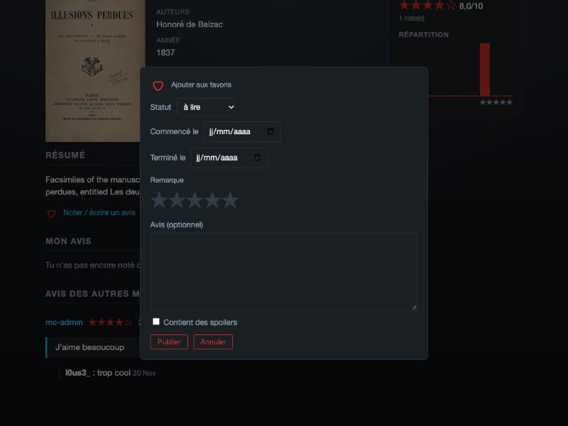
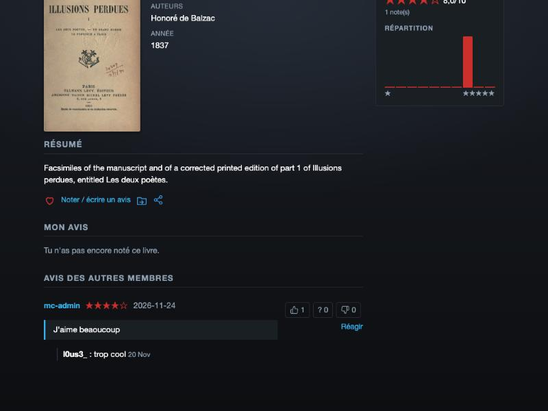

Fiche d'un livre
Parcours
En haut à gauche la couverture, à côté les métadonnées (auteurs, année, ISBN, pages, prix obtenus). À droite, l'encart 'Note moyenne' avec note sur 10, nombre de votants, et un histogramme de la répartition (1 à 5 étoiles). Plus bas le résumé, puis la ligne d'actions : 'Noter / écrire un avis', ajouter aux favoris (cœur), ajouter à une liste (dossier), suggérer (triangle). Section 'Mon avis' : si tu n'as pas encore noté, elle est vide ; sinon, ta note et ton texte. Enfin 'Avis des autres membres' avec, pour chacun, étoiles, date, extrait d'avis, trois réactions (pouce haut / point d'interrogation / pouce bas) et un lien 'Réagir' pour poster un commentaire sous l'avis.
Chaînes d'action
Chaque ligne décrit un déclencheur dans l'interface, ce qu'il ouvre (modal ou formulaire), et l'effet produit.
| Déclencheur | Modal / Champs | Effet |
|---|---|---|
| Lien 'Noter / écrire un avis' (ou clic sur les étoiles) | Modal avec : 'Ajouter aux favoris' (cœur), Statut (à lire / en cours / lu), Date début, Date fin, Note (5 étoiles, demi-étoiles possibles), Avis (textarea), case 'Contient des spoilers'. | Enregistre une 'lecture' (reading) liée à ce livre : ta note s'affiche immédiatement dans 'Mon avis', elle entre dans la moyenne, et ton avis apparaît dans le flux des avis de tes clubs. Si tu coches 'spoilers', ton avis est masqué par défaut aux autres (ils doivent cliquer pour le révéler). |
| Icône cœur (en bas du résumé) | — | Ajoute/retire le livre de ta liste système 'Favoris'. Un cœur plein = favori ; un cœur vide = non favori. |
| Icône dossier (en bas du résumé) | Modal 'Ajouter à une liste' avec tes listes existantes (nom + nombre de livres) et un champ 'Titre' pour créer une nouvelle liste. | Ajoute le livre à la liste choisie (ou en crée une nouvelle). Confirmation dans la fiche de la liste correspondante. |
| Icône partage/triangle (en bas du résumé) | Modal 'Suggérer ce livre' : radios des membres que tu suis + textarea 'Message (facultatif)' (compteur 0/280). | Envoie une notification au destinataire : il reçoit une entrée dans 'Notifs' du type 'X te suggère <livre> : <ton message>'. Si tu ne suis personne, le modal explique qu'il faut d'abord suivre un membre. |
| Pouce haut / point d'interrogation / pouce bas sous un avis | — | Enregistre ta réaction (positive / mitigée / négative) à l'avis. Les compteurs se mettent à jour ; l'auteur de l'avis voit les réactions. |
| Lien 'Réagir' sous un avis | Modal avec un champ textarea 'Ton commentaire...' et boutons 'Publier' / 'Annuler'. | Poste un commentaire imbriqué sous l'avis. Les autres membres du club le voient ; l'auteur de l'avis reçoit une notification. Les commentaires sont supprimables uniquement par leur auteur ou un administrateur. |
Modales

